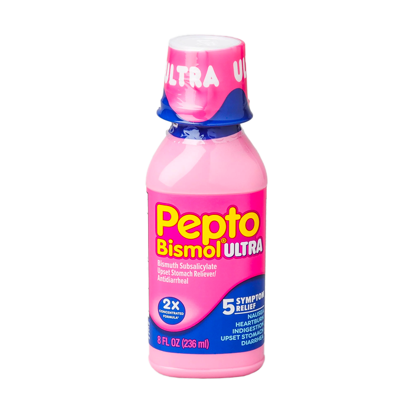

origin
medicineayurveda
ginger
throwing
Ginger’s health benefits come from its main bioactive component is gingerol, and its related compounds called shogals, which give ginger its pungent taste. Gingerols and shogaols block the actions of neurotransmitters acetylcholine and serotonin. Acetylcholine triggers involuntary stomach contractions, while serotonin stimulates the vomiting reflex.
origin
medicine persia
peppermint
up,
Peppermint relieves gastric muscles, keeping them from contracting or cramping, thus alleviating nausea and vomiting. Peppermint oil suppresses the production of inflammatory mediators from human monocytes.
origin
medicineaztec
nopal
shitting,
The anti-inflammatory properties of Nopal makes it a reliever of stomach discomfort. It attains its anti-inflammatory properties from its flavonoids, kaempferol and quercetin.
origin
medicinewest
peptobismol
shaking.
Peptobismol works by protecting the stomach and lower part of the esophagus from stomach acid, by blocking proteins in the body called cyclooxygenase. This slows movement in your stomach and intestines, acting as a mild antacid, reducing stomach acid and easing discomfort, and alleviating nausea.
